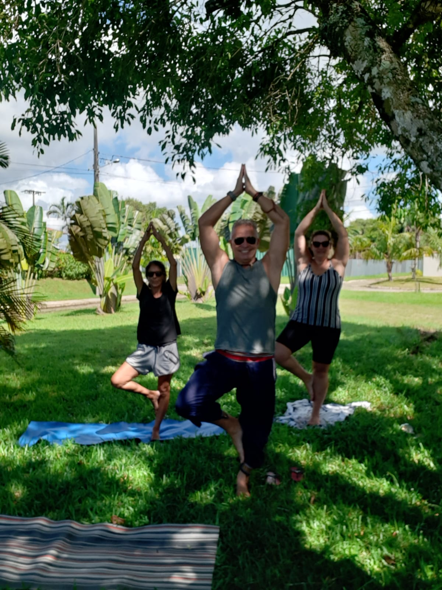

SOBRE O INSTRUTOR
MARCOS CROZETTA
Professor de yoga formado na Faculdade Espírita em Curitiba e pós graduando em Ayuveda.
Especialista em fisiologia do exercício. Biólogo formado pela
Universidade Federal do Paraná, mestre em parasitologia molecular e imunologia.
YOGATERAPIA
O QUE É?
yogaterapia, uma disciplina que usa os fundamentos do yoga para aliviar ou curar doenças físicas e psicológicas. Assim, o praticante mantém o corpo e a mente saudáveis usando asanas (posturas), pranayama (exercícios respiratórios), alongamentos, e meditação. Além de poder se beneficiar da dimensão filosófica desse disciplina, que ensina a encontrar a vitalidade e atingir a plenitude tornando-se zen.
BENEFÍCIOS
- Renovar e purifica a energia vital.
- Permite conhecer e entender melhor o próprio corpo.
- Trazer equilíbrio físico, mental e espiritual.
- Tornar possível o fortalecimento do sistema imunológico.
- Estimular a entender o poder do pensamento positivo.
- Aumento da concentração e do relaxamento.